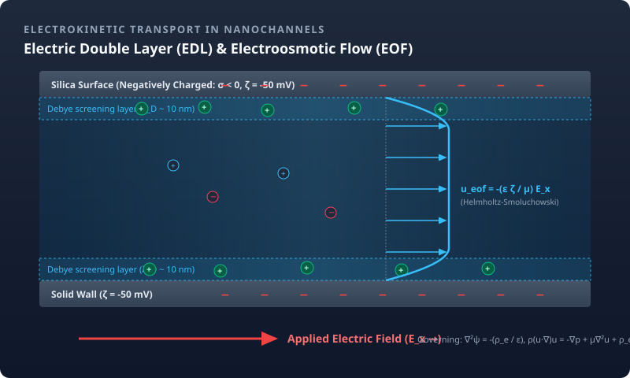

Electrokinetics & EDLNonlinear Electroosmotic Transport in Nanochannels
Modeling ion concentration polarization, electric double layer (EDL) capacitance, and electroosmotic flow (EOF) in charged nanochannels. Surface chemistry equilibria (protonation/deprotonation) are dynamically coupled with non-linear Poisson-Boltzmann and Nernst-Planck systems to predict current-voltage characteristics and mass throughput.